2 Tuesday Head Coach Script
|
| SCRIPT KEY |
| |||
|
| = AM camp |
| AM camp only notes | ||
|
|
| = PM camp |
| PM camp only notes | |
|
| = move outside for this block (if possible) | ||||
|
| = entire camp is together/mixed for this block | ||||
|
| = breakout into individual camp teams for this block | ||||
|
| Really important notes! | ||||
|
| New notes for this day only/this day forward | ||||

2.1 Check In
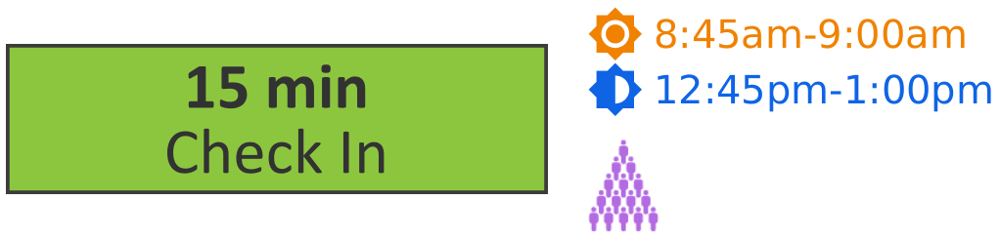
Arrive at the check in location at quarter of (8:45am/12:45pm).
Assign specific jobs to all TLs
Head to camp room on the hour (9am/1pm)
- Assign One TL to wait for any late students
TL keeps tablet
TL returns to camp room when all students arrive or at quarter past (9:15am/1:15pm)
Once TL returns, confirm attendance on backend is accurate with HQ over Slack
2.2 Coding Warmup
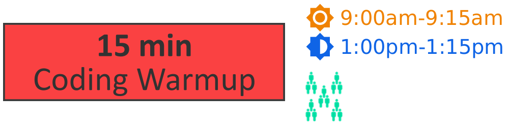
5 and 2 min warnings
With loose guidance from TLs, students review katas from yesterday
Step in for TL who is waiting at check-in
2.3 Katas
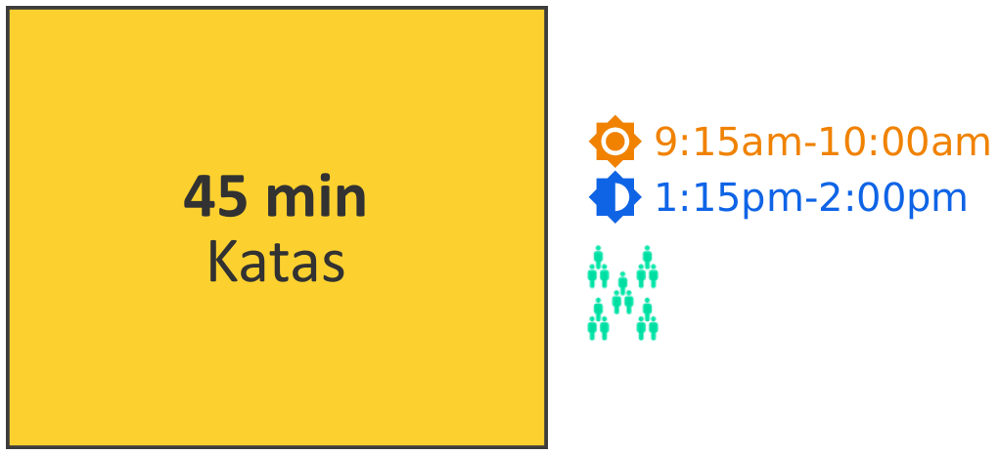
15, 10, 5 and 2 min warnings
- Transition announcement:
Welcome back!
New Katas today!
So listen up to TLs
Monitor and assist TLs as they work on the next section katas
PM ONLY – take YOUR 30 min lunch break from 1:20-1:50
2.4 Snack Break
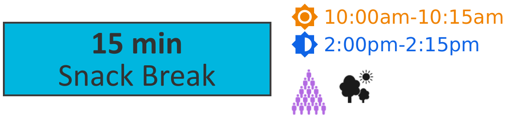
5 and 2 min warnings
Dismiss TLs for break – TLs should LEAVE the camp space so they can actually relax/check phones/not be interrupted by students
All students are off computers for the entire break
Monitor all students and keep it safe and sane
2.5 Game Time
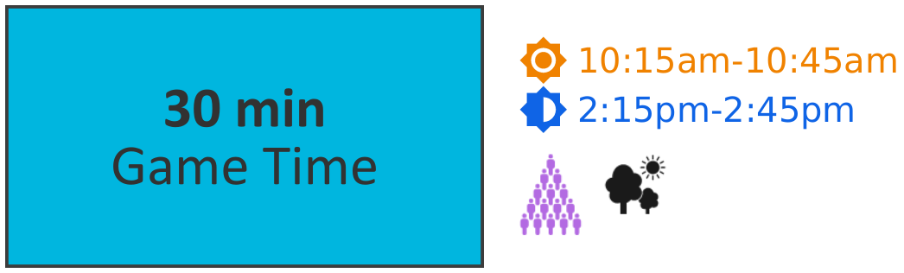
5 and 2 min warnings
Choose game(s) from chart below. Consider expected interest of the group, any play space restraints, and what has been already played when choosing.
If both groups will be playing the same game, introduce the game first, then split up. Otherwise split first, and have TLs help you in explaining/playing the games.
When splitting into game groups, consider age recommendations, student safety (physical size of students), and actual student interest.
Age Group |
| Game |
| Notes |
All Ages |
|
| Can play with any number of players. | |
Younger |
|
| Tag needs large outdoor space. | |
Older |
|
| 5 player min. |
2.6 Nerd Out
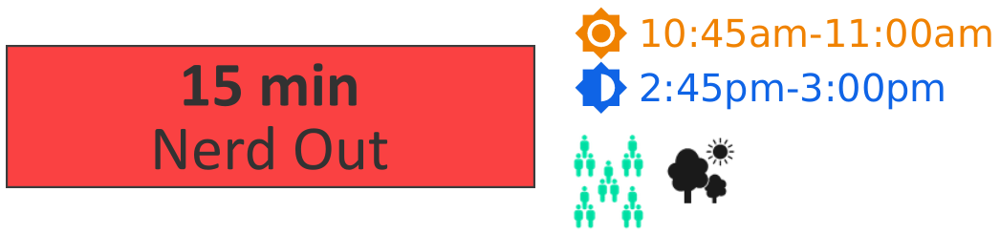
5 and 2 min warnings
- Announce today’s mission:
3rd-10th camps –What do you like about your fandom? Why do you think this fandom is so popular?
K-2nd camps – What is your favorite animal? What animals do you think a lot of people like? Why?
Monitor camp groups, inspiring further discussion as needed
2.7 Kata Practice
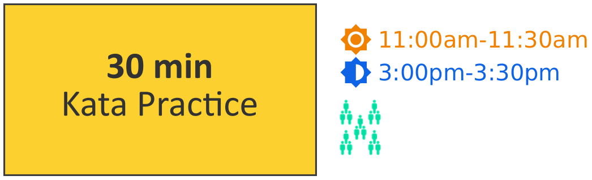
10, 5 and 2 min warnings
- Transition annoucement:
Wrap up discussion
Back to katas
Earn more katas or extra challenges from TLs!
Monitor camp groups, assisting TLs as needed
2.8 Game Show
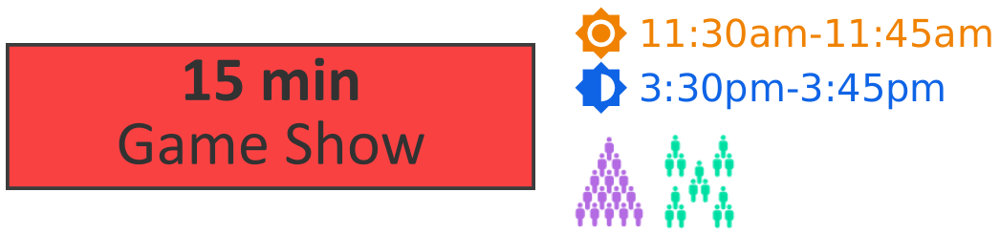
5 and 2 min warnings
Bring camp all together
- Review rules & rewards of the game show:
TLs as buzzers or raised hands
Wait to be called on, no shouting out!
TS dollars/other reward?
- Today’s Whole Camp Daily Game Show Questions:
What is the most important keys/characters when coding in Dr Racket? Open and closing parentheses ( )
What is Game Jam? A race to create the best game you can using the skills you learn over this week.
Everyone – cover your nametags. Who can tell me the name of everyone in their camp team?
How many tiles are there in the games we are making? K-2: 4 (2x2) 3-10: 9 (3x3)
Who can tell me 1 of the reasons that your team brainstormed for why your fandom is popular? K2 – what animals are popular? (1 answer per camp team)
Breakout into camp teams for TLs to lead camp-specific game show questions
2.9 Market/Wrap Up
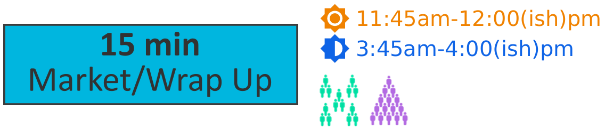
PM only – ensure you finish with enough time to travel to check-out location by 4pm
Assign yourself or a TL to be Market Cashier
Students tidy their camp table before allowed to go to market(see EOD checklist for PM todo list)
Welcome camp teams one at a time to visit market
Students done with market collect their things for lunch/home and line up by door
2.10 Lunch – AM only
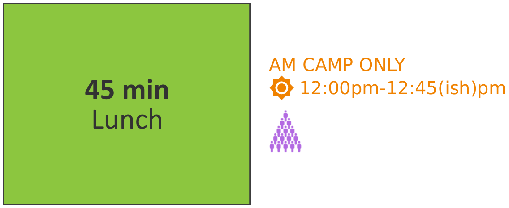
10, 5 and 2 min warnings
- Remind all students the rules of lunch:
Absolutely no running
Be courteous and polite to staff/other diners
One dessert per day
Clean up correctly
Sit together
Ensure you finish with enough time to travel to check-out location by 12:45pm
Keep lunch time safe and organized
2.11 Check Out
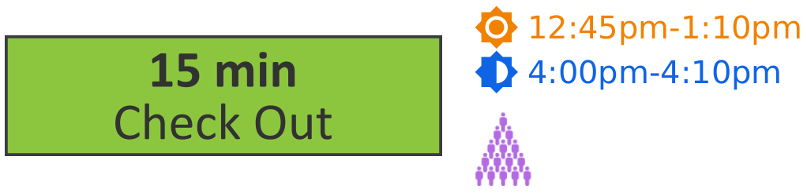
Arrive at the check-out location on time
Assign specific jobs to all TLs
Alert HQ of any students awaiting pickup at ten past (1:10pm/4:10pm) and keep HQ up to date when picked up
PM ONLY – review and (if needed) finish EOD checklist, below, with assistance from TLs, before dismissing TLs and clocking out
2.12 EOD Checklist – PM only
Staff to complete (with assistance from students as appropriate) during Market/Wrap Up. TL(s) continue as needed during checkout. Complete before dismissing TLs and clocking out.
Power down all chromebooks.
Properly store all chromebooks, mice, and other equipment as the location requires.
Divide lanyards into AM and PM groups. Be sure to put all-day campers’ lanyards back with AM.
Tidy market, coach kits, tables, general room as needed.
Lights out and lock up according to your location’s protocol.